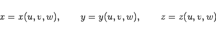
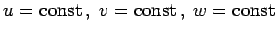
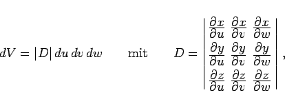
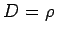
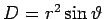

Inhalt Index DeskTop Bronstein

 Integralrechnung Mehrfachintegrale Dreifachintegral Berechnung des Dreifachintegrals
Integralrechnung Mehrfachintegrale Dreifachintegral Berechnung des Dreifachintegrals


Die beliebigen krummlinigen Koordinaten u,v,w sind durch die Beziehungen
|  | (8.146) |
definiert. Das Integrationsgebiet wird durch die Koordinatenflächen  in infinitesimale Volumenelemente in beliebigen Koordinaten eingeteilt:
|  | (8.147a) |
wobei D die Funktionaldeterminante ist. Nach Ausdrücken des Integranden in den Koordinaten u, v, w lautet das Integral:
Die Formeln (8.144b) und (8.145b) sind Spezialfälle von (8.147b). Für Zylinderkoordinaten ist , für Kugelkoordinaten ist . Mit Vorteil werden immer solche krummlinigen Koordinaten verwendet, die eine möglichst einfache Berechnung der Integrationsgrenzen des Integrals (8.147b) gestatten.